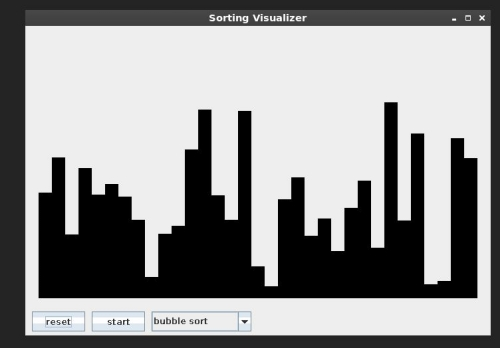

Learning Sorting algorithms by writing a simple visualizer
I have been trying to get into DSA and was learning some simple algorithms like bubble sort and quick sort when I came across this video . That kind of inspired of me to try to make my own visualizer . You can find source code for the project here .
I have used java in this project although at first I tried to write it in javascript like it was in the video but I guess I am still not that comfortable with javascript cause I was not able to get it working even after trying for a whole day with different things like using divs , canvas etc maybe in future I will make on and post it on my website :)
I switched to java and was able to get it working without much effort (atleast not as much as javascript ) Although its not very perfect the reason being that the loops run fast sometimes and slow sometimes , like its laggy in when using bubble sort but when doing the quick sort its a comparaitevey less laggy , I can see how using more loops can make a program slower etc .

The app is pretty simple its a frame on which the the array is painted with a graphics object and when the the array is being sorted the frame is updated as per the sorted array . althought its not the efficient one because the loop runs differently and the program appears to laggy , I curently have no idea on how to fix this issue . but i am working on it . I have tried different solutions like timer etc but no luck I will update the blog as soon I solve the Issue .
some important things I am learning from this project
- Working of EDT (Event Dispatch Thread) in java
- using of swinworker class
In java swing when you press a button the button is enabled until the task the done , this is the exact behaviour mostly applications want but in my program and many such programs when the task is long and takes time(in my case the array of the size of around 15 elements is being sorted with the worst case taking around O(n2) time ) this makes the GUI freeze and its just unfreezes when the the array is sorted which misses the whole point of being able to witness and see as the array is getting sorted . In this case java provides the swingworker class which enables me to run functions in the background without actually blocking the EDT (Event dispatch Thread ). which was exactly what fixed my problem at start . - various sorting algorithms